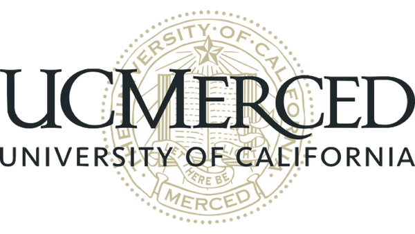

|
I am looking for full-time Machine Learning Engineer, Research Engineer, and Research Scientist positions. If you think I might be a good fit, or would simply like to connect, please feel free to reach out at zhuoyuan.jiang625@gmail.com. Thanks!
|
Education
|
Yale University
M.S. in Biostatistics (Data Science)
Sept. 2024 – May 2026
|
University of California, Santa Barbara
B.S. in Psychological & Brain Sciences
and Financial Mathematics & Statistics
Sept. 2019 – Jun. 2023
|
|
Work Experience
|

UC Merced Vision and Learning Lab
Machine Learning Research Intern
Jun. 2025 – Present
|
UCSB Center for Financial Mathematics
and Actuarial Research
Machine Learning Researcher
Sept. 2022 – May 2023
|
|
|